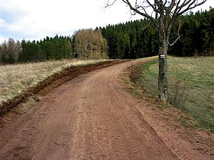
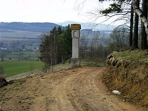
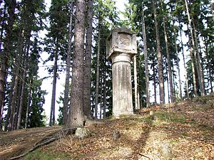
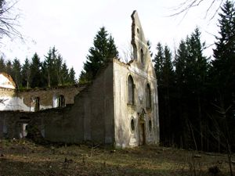
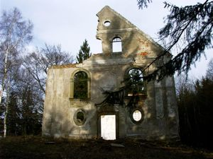
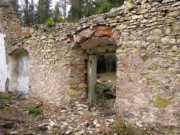
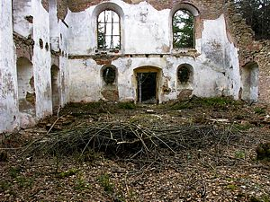
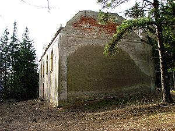
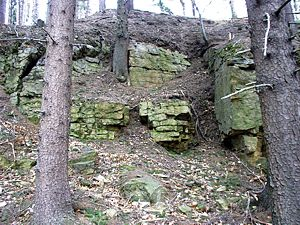
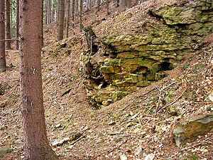

Œw. Anna - kwiecieñ 2004
Wœród mieszkañców Krzeszowa powsta³a ostanio myœl, aby odbudowaæ koœció³ek na Górze œw. Anny. Wiêcej informacji na ten temat mo¿na znaleŸæ na stronie http://web.dka.pl/anna-krzeszow/. Strona ta, tworzona przez Tomasza Uznañskiego, zawiera informacje o tej inicjatywie. Pomys³ ciekawy, lecz zapewne nie ³atwy do zrealizowania ...
|  | Korzystaj¹c z faktu, ¿e akurat by³em w Krzeszowie, pogoda by³a piêkna, ja mia³em trochê wolnego czasu i dodatkowo akurat jecha³em sobie do Krzeszowa od strony Grz¹d postanowi³em ostatnio (a konkretnie 07-04-2004) zobaczyæ, co te¿ siê zmieni³o w tym miejscu. Pierwsz¹ rzucaj¹c¹ siê w oczy zmian¹ jest droga w stronê œw. Anny. Widaæ, ¿e przeprowadzono prace maj¹ce na celu najprawdopodobniej u³atwienie dojazdu w to miejsce. |
|  | Poszerzono przejazd ko³o kaplicy stoj¹cej pod samym lasem. Zarysowania z boku tej kapliczki s¹ najlepszym dowodem na to, ¿e wczeœniej by³o tutaj nazbyt ma³o miejsca do swobodnego przejazdu. |
|  | Najwiêksz¹ niespodziank¹ tej wycieczki by³ dla mnie fakt istnienia tej kaplicy. Owszem, bywa³em na tej górze wiele razy, ale jakimœ zbiegiem okolicznoœci nigdy w ¿yciu nie zauwa¿y³em tej kolumny. |
|  | I ju¿ sama kaplica œw. Anny. |
|  | Widaæ, ¿e w najbli¿szym otoczeniu kaplicy wyciêto krzaki i dziko rosn¹ce drzewa. Wczeœniej ruiny budynku by³y ledwo widoczne zza drzew. |
|  | Tak, ruiny to chyba w³aœciwe okreœlenie dla aktualnego stanu kaplicy. |
|  | Obiekt jest prawie ca³kowicie zniszczony ... |
|  | Tym bardziej trzeba mieæ podziw dla inicjatywy odbudowy tej kaplicy, z ca³¹ pewnoœci¹ nie bêdzie to ³atwe zadanie. |
|  | Maj¹c chwilê czasu pochodzi³em sobie po najbli¿szej okolicy ... |
|  | ... muszê przyznaæ, ¿e z daleka Wzgórza Krzeszowskie wygl¹daj¹ zaledwie na pagórki. Jednak s¹ to ca³kiem spore góry ze stromymi zboczami. Kilkadziesi¹t metrów przed frontow¹ elewacj¹ kaplicy mo¿na zobaczyæ ciekawie wygl¹daj¹ce ska³y. Moim zdaniem prawdopodobnie miêdzy innymi te ska³y by³y Ÿród³em materia³u do budowy kaplicy. |

{kind=link}
{kind=link}
{kind=link}
{kind=link}
{kind=link}
{kind=link}
{kind=link}
{kind=link}
{kind=link}
{kind=link}